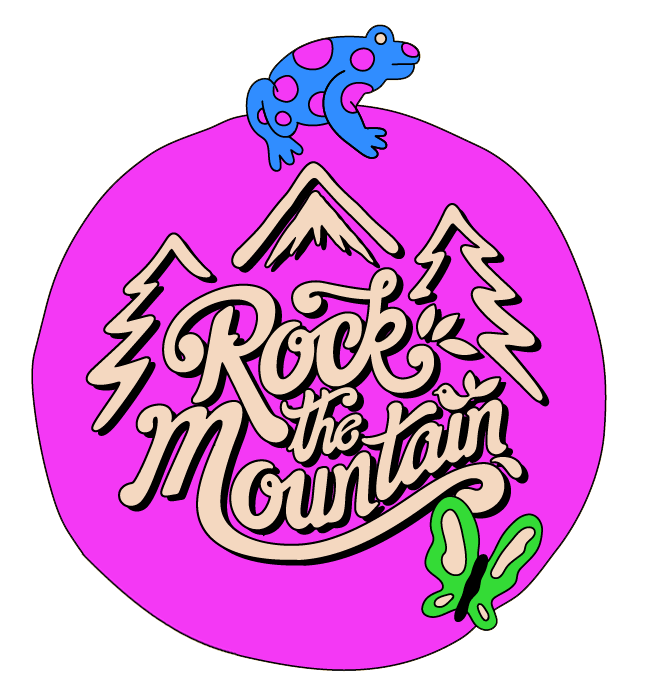

Um dos maiores e mais respeitados festivais de música eletrônica e arte digital do mundo, realizado em Barcelona, Espanha. Site oficial:
https://sonar.esFestival independente nas montanhas galesas, próximo a Crickhowell, com curadoria sensível e atmosfera mágica. Site oficial:
https://www.greenman.netFestival intimista na cidade de Leiria, com foco na música independente lusófona e ocupação urbana criativa. Site oficial:
https://www.festivalaporta.comMistura de festival e conferência em Austin, Texas, sendo um dos principais palcos da indústria musical para descobertas internacionais e inovação cultural. Site oficial:
https://www.sxsw.comFestival dedicado à música global e experimental, realizado em Utrecht, com curadorias de artistas convidados. Site oficial:
https://www.leguesswho.comPlataforma internacional dedicada à música eletrônica de ponta e arte digital, com edições em Montreal. Site oficial:
https://montreal.mutek.orgEdição japonesa do MUTEK, realizada em Tóquio, promovendo criatividade digital e música eletrônica. Site oficial:
https://tokyo.mutek.orgEdição mexicana do MUTEK, realizada na Cidade do México, explorando arte digital e performances audiovisuais. Site oficial:
https://mexico.mutek.orgPrincipal evento da indústria musical australiana, realizado em Brisbane, voltado à descoberta de novos artistas da Oceania. Site oficial:
https://www.bigsound.org.auRealizado em São Luís, Maranhão, o Festival BR-135 promove a música autoral e conecta artistas independentes, celebrando a diversidade cultural do estado. Site oficial:
https://festivalbr135.com.brFestival anual em Recife, Pernambuco, que promove bandas e artistas independentes do estado e do nordeste brasileiro, oferecendo uma experiência cultural completa. Site oficial não disponível; informações geralmente divulgadas via redes sociais ou plataformas locais.
Festival anual de 48 horas em Odessa, apresentando novas músicas de artistas ucranianos e internacionais, principalmente no gênero experimental. Site oficial não disponível; informações limitadas devido a possíveis interrupções causadas por conflitos na região.
Festival de música eletrônica que ocorre anualmente na Crimeia, conhecido por sua atmosfera única e por se autodenominar uma 'república' com suas próprias regras. Site oficial não disponível; o festival foi suspenso ou realocado em anos recentes devido a questões geopolíticas.
Festival internacional de jazz realizado em Lviv, considerado um dos maiores da Europa, com apresentações de músicos de diversos países. Site oficial:
https://leopolisjazz.comFestival alternativo realizado no Castelo Bánffy, na Transilvânia, combinando música, tecnologia e arte em um cenário histórico. Site oficial:
https://electriccastle.roRealizado na Fortaleza de Petrovaradin, em Novi Sad, o Exit é conhecido por sua origem politizada e por promover questões sociais através da música. Site oficial:
https://www.exitfest.orgMaior evento musical da Eslováquia, realizado no aeroporto de Trenčín, com line-up eclético e diversas atividades culturais. Site oficial:
https://www.pohodafestival.skFestival realizado em The Garden Tisno, combinando música eletrônica com festas na praia e em barcos, em um cenário paradisíaco. Site oficial:
https://www.soundwavecroatia.comFestival único no Lago Atitlán que celebra arte, música e espiritualidade, promovendo a co-criação de mudanças positivas. Site oficial:
https://cosmicconvergence.orgEvento imersivo em Uvita que combina música, arte, ioga e vida consciente, promovendo conexão com a natureza e autoexpressão. Site oficial:
https://envisionfestival.comFestival em Jacarta que celebra música, arte, moda e culinária, com uma atmosfera vibrante e eclética. Site oficial:
https://www.wethefest.comRealizado na estação de esqui Naeba, é um dos maiores festivais de música do Japão, com foco em rock e música alternativa. Site oficial:
https://www.fujirockfestival.comFestival em Kuala Lumpur que apresenta uma variedade de gêneros musicais, promovendo uma experiência vibrante para os participantes. Site oficial:
https://www.goodvibesfestival.comMaior festival gratuito e ao ar livre da América, realizado em Bogotá, promovendo bandas de rock e programas de convivência entre os jovens. Site oficial:
https://www.rockalparque.gov.coFestival de música independente em San Francisco, celebrando artistas emergentes e cultura local. Site oficial:
https://www.noisepop.comFestival anual em Zanzibar, destacando a diversidade da música africana com artistas de todo o continente. Site oficial:
https://www.busaramusic.orgFestival multicultural no Vale de Ezulwini, combinando música, arte e engajamento social. Site oficial:
https://www.bush-fire.comMaior festival de jazz da África, realizado anualmente na Cidade do Cabo, reunindo artistas locais e internacionais. Site oficial:
https://www.capetownjazzfest.comFestival em Maputo que promove música, cinema e arte contemporânea africana. Site oficial:
https://azgo.co.mzUm dos maiores festivais de música folclórica da América do Sul, realizado anualmente em Cosquín, Córdoba. Site oficial:
https://www.aquicosquin.org

Festival de música e arte realizado em Itaipava, Petrópolis (RJ), reunindo artistas nacionais e internacionais em meio à natureza da serra fluminense.
Um dos maiores festivais de música do mundo, realizado na Cidade do Rock, no Rio de Janeiro, com edições também em Lisboa e outros países. Site oficial:
https://www.rockinrio.comFestival anual de música e artes realizado no Empire Polo Club, em Indio, Califórnia, conhecido por sua diversidade musical e instalações artísticas. Site oficial:
https://www.coachella.comUm dos maiores festivais de música eletrônica da Ásia, realizado em Vagator, Goa, com apresentações de DJs renomados e uma atmosfera vibrante. Site oficial:
https://www.sunburn.inEdição argentina do famoso festival Lollapalooza, realizada no Hipódromo de San Isidro, em Buenos Aires, com line-ups internacionais e locais. Site oficial:
https://www.lollapaloozaar.comEdição argentina do festival de música eletrônica Ultra, realizada no Parque de la Ciudad, reunindo DJs internacionais e fãs de música eletrônica. Site oficial:
https://www.ultraargentina.comRealizado no deserto de Black Rock, Nevada, o Burning Man é um experimento em comunidade, arte e autoexpressão radical. Milhares de pessoas criam uma cidade temporária baseada em princípios de inclusão, participação e sustentabilidade. Site oficial:
https://burningman.org